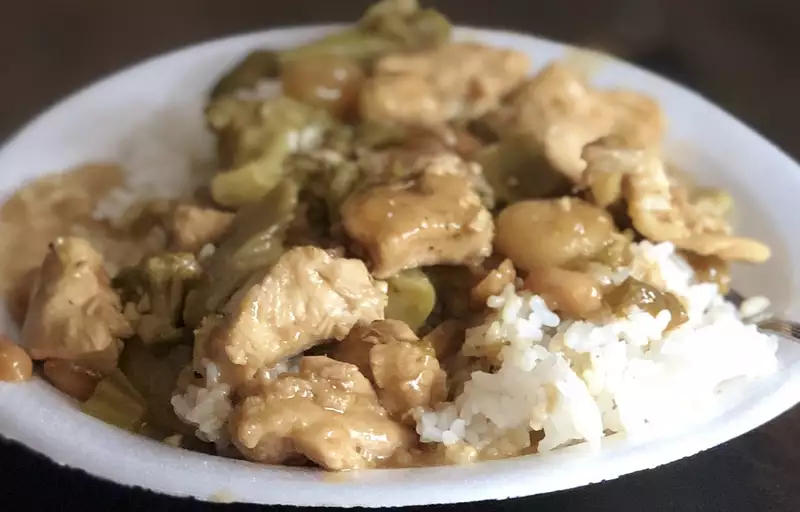

Kung Pao Chicken

Description
This tasty kung pao chicken is similar to what is served in Chinese restaurants. It's easy to make, and you can be as creative with the measurements as you want.
Ingredients
- 2 tablespoons cornstarch, dissolved in 2 tablespoons water
- 1 1/2 pounds boneless skinless chicken breasts, cut into 1-inch chunks
- 1 tablespoon vegetable oil
2 tablespoons white wine, divided
- 2 tablespoons soy sauce, divided
- 2 tablespoons sesame oil, divided
- 1 ounce hot chile paste
- 2 tablespoons brown sugar
- 8 whole dry chile pods
- 1 teaspoon crushed dried red pepper
- 2 cloves garlic, minced
Directions
- Combine water and cornstarch in a cup; set aside.
-
Combine 1 tablespoon wine, 1 tablespoon soy sauce, 1 tablespoon sesame oil, and 1 tablespoon cornstarch/water mixture in a large glass bowl.
Add chicken pieces and toss to coat. Cover the dish and refrigerate for about 30 minutes.
-
Combine remaining 1 tablespoon wine, 1 tablespoon soy sauce, 1 tablespoon sesame oil, and remaining cornstarch/water mixture in a medium bowl.
Whisk in chili paste, brown sugar, and vinegar. Add water chestnuts, peanuts, green onions, and garlic and toss to coat.
-
Transfer water chestnut mixture to a medium skillet. Heat slowly over medium heat until aromatic.
-
Meanwhile, transfer chicken from marinade into a large skillet;
cook over medium-high heat, stirring, until chicken is cooked through and juices run clear.
-
Combine water chestnut mixture and sautéed chicken together in one skillet.
Adjust heat and simmer together until sauce thickens.
Back to
Home Page